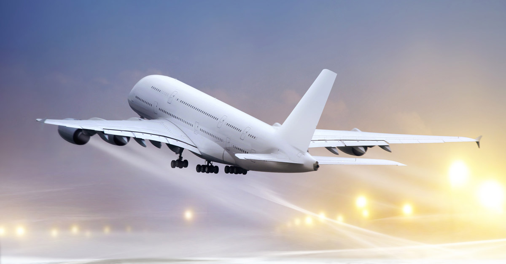
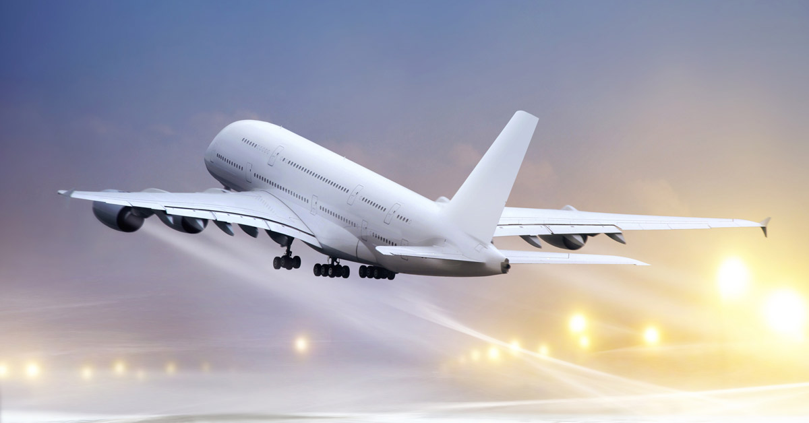
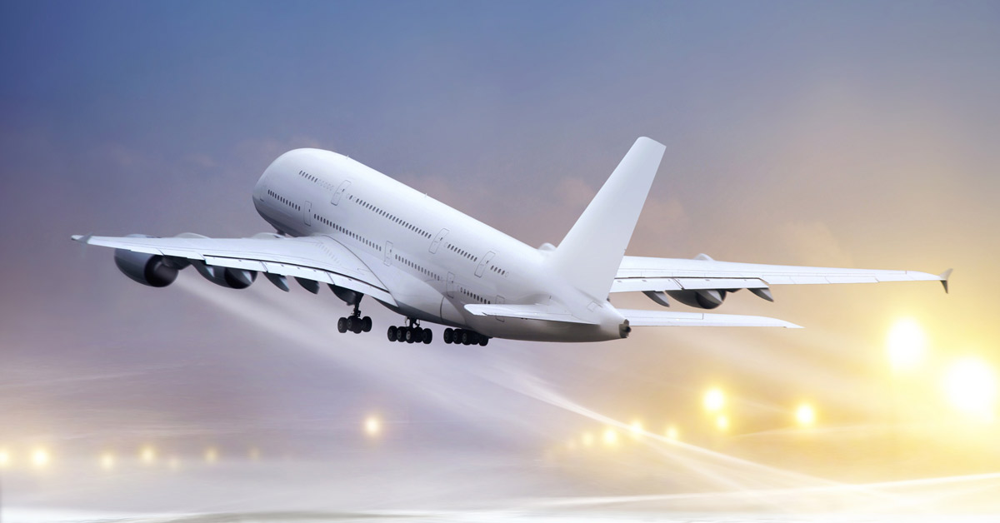

Caracteristicas de aviones
La característica que mejor define este modo de transporte es que no necesita una pista en la superficie durante todo su trayecto, solo al inicio y al final.
También se diferencia de otros modos de transporte en que no tiene barreras físicas y su ventaja más importante radica en su rapidez.
Tecnología aeronáutica que avanza a ritmos vertiginosos, proveyendo de aviones con motores cada vez más eficientes en lo que se refiere al consumo de combustible.
